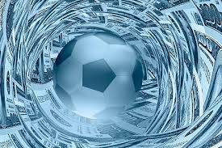
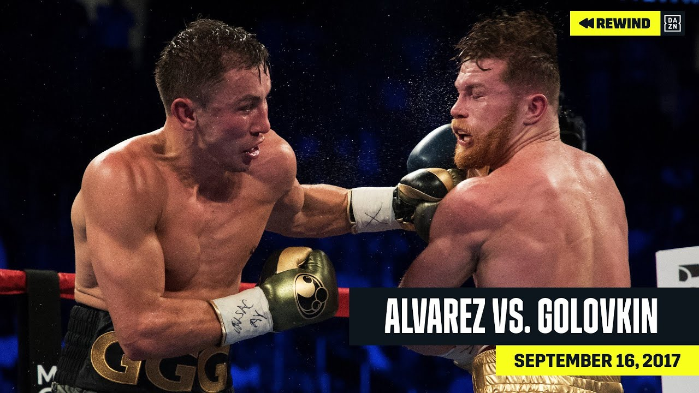
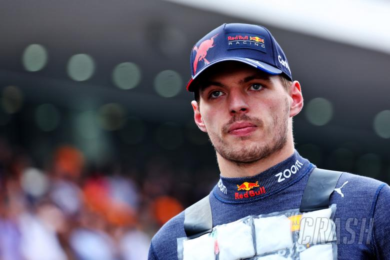

Eden Hazard injury update
Real Madrid striker Eden Hazard injured again on last match with Sevilla FC.

Alvaro Morata scores to Torino
Alvaro Morata scored 2 goals against Torino on 27th round of Serie A.

Canelo Alvarez rejected GGG rematch
Canelo Alvarez rejected Gendiy Golovkin request to rematch again.

Max Verstappen became a leader
Max Verstappen won the french Grand Prix at Paul Richard circuit.